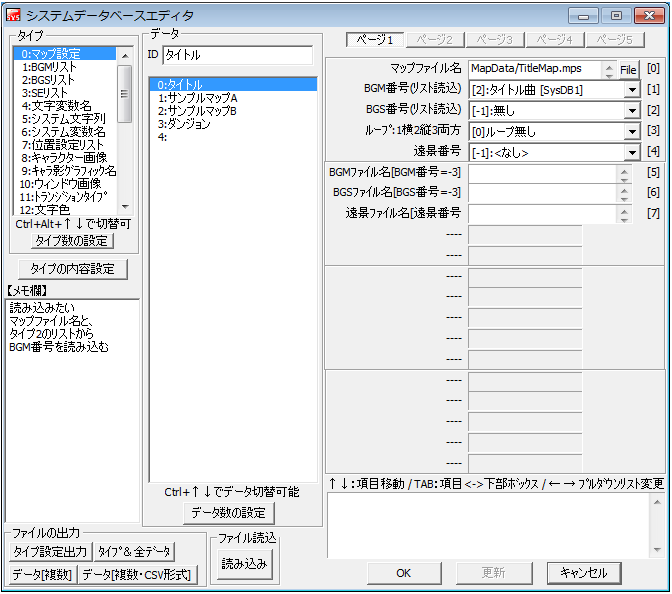

データベース 【システムデータベース】
ツール開発者(SmokingWOLF)側で設定したＤＢです。 マップやBGM設定など、ゲームで使われる主情報を登録するために使います。

・システムデータベースの使い方
すでにツール開発者側が指定したタイプ設定に従って、ツール利用者（つまりあなた）がその内容を設定します。基本的に「タイプの内容設定」でタイプ内容を変更することはお止め下さい。
マップファイルやBGM、BGS、SEなどのファイルは、システムデータベースに登録しないと使用することができませんのでご注意下さい。
※重要：タイプ1～13の「タイプ設定」は、WOLF RPGエディターの仕様に応じて変更される場合がありますので、基本的に変更しないでください。
各々のタイプの内容については「各タイプの説明」を参照してください。